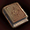
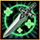
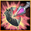
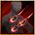
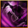
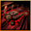
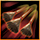
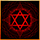
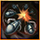
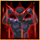

超越スキル
概要
ノーマル一覧
レア一覧
ユニーク一覧
3転900Lv～使用可能
港町ボルティッシュ「超越の導師バラン（32.38）」にて、クエスト「潜在意識の解放」を完了後にスキルスロットがオープンされます。
このスロットはクエスト完了時、1000Lv、1200Lv・課金アイテム悟りの書(通常時1000GEM)使用時に開放されます。(最大4つ)
オープンされたスキルスロットに各種「超越の書」(取引・銀行・倉庫可)を使用することで修得できます。
超越スキルにはノーマル、レア、ユニークの3種類があり、修得にはそれぞれの超越の書が必要です。
| 超越の書 | 入手方法 | |
|---|---|---|
|  | ノーマル | 炎の石1個、神秘の石5個、結晶石5個、1億ゴールドで超越の導師バランにて製作 |
| レア | Lv600以上のモンスターから低確率でドロップ | |
| ユニーク | レイドボス、秘密D「放棄された地下牢獄(700～)」「逃亡者の山(900～)」の一部モンスター ギルドダンジョンB8・B9の一部モンスターから低確率でドロップ。 また、試練のダンジョン800Lv～におけるパーティープレイの完了報酬として低確率で獲得可能。 |
|
超越スキルは、最大SLv20まで強化できます。
| 超越スキル | 対象の職業 | 最大スキルLv | 必要スキルポイント | Lv1修得に必要な材料 |
|---|---|---|---|---|
| ノーマル | 全職業共通 | Lv20 | Lv1 2000 Lv2 2100 Lv3 2300 … +200/毎Lv 合計 7万6100 |
炎の石1個 ペパーミントフラワーの硝子ビン2個 100万ゴールド |
| レア | 各職限定 | Lv1 | 6万 | 炎の石25個 ペパーミントフラワーの硝子ビン50個 3億ゴールド |
| ユニーク | 全職業共通 | Lv20 | Lv1 2000 Lv2 2100 Lv3 2200 Lv4 2400 Lv5 2500 Lv6 3000 Lv7 3500 Lv8 4500 Lv9 5500 Lv10 6000 Lv11 7000 Lv12 8000 Lv13 9000 Lv14 10000 Lv15 11000 Lv16 12000 Lv17 13000 Lv18 14000 Lv19 15000 Lv20 16000 ※合計 148700(SP) | 炎の石1個 ペパーミントフラワーの硝子ビン2個 100万ゴールド |
超越スキルの削除には、課金アイテム「超越スキル忘却の書」(300GEM)が必要です。
スキルポイントは還元されますが、スキル強化に使用した材料は戻りません。
GvGアリーナにて装着することも(2019.1現在)可能。
※超越スキルはGvGや攻城戦にも適用されますが、一部のスキルについては性能が調整されます。
ノーマル
| ノーマル等級 | 超越スキル説明 | SLv1~10 | SLv11~20 | |
|---|---|---|---|---|
| 筋力強化 | 永久的に力を増加させる。力が増加する代わりに、健康が減少する。 |
SLv*50増加 SLv*25減少 |
500+(SLv-10)*10増加 250+(SLv-10)*10減少 |
|
| 知識強化 | 永久的に知識を増加させる。知識が増加する代わりに、健康が減少する。 | |||
| 敏捷強化 | 永久的に敏捷を増加させる。敏捷が増加する代わりに、カリスマが減少する。 | |||
| 知恵強化 | 永久的に知恵を増加させる。知恵が増加する代わりに、敏捷が減少する。 | |||
| 健康強化 | 永久的に健康を増加させる。健康が増加する代わりに、カリスマが減少する。 | |||
| カリスマ強化 | 永久的にカリスマを増加させる。カリスマが増加する代わりに、敏捷が減少する。 | |||
| メンテナンス術 | 装備の点検・整備が上達し、耐久度が減少する確率を下げる。 | ？ | ？ | |
|  | 体力再生 | 敵にダメージを与えた際に、一定量のHPが回復する。 | 体力回復量 (SLv-1)*30+50 | |
| ランダム追加 ダメージ |
一定の数値分のランダム属性の追加ダメージが発生する。 | ランダム属性 追加ダメージ 500+SLv*50 |
ランダム属性追加ダメージ 1000+(SLv-10)*10 |
|
レア
| レア等級 | 超越スキル説明 | 効果 | 職業 | |
|---|---|---|---|---|
 |
パラレルスティング改 | パラレルスティング 最大打撃回数が1回増加する。 | 最大打撃回数1回増加 | 剣士 |
| ドラゴンツイスター改 | スキル発動から完了までの全体時間が2秒短縮される。 | 全体打撃時間2秒減少 | 戦士 | |
| テイルチェイサー改 | 発動後、対象が生存している場合、追加で矢を発射し、対象の最大体力に比例したダメージを与える。 | 最大体力比例ダメージ 10% | アーチャー | |
|  | オーサムフォートレス改 | 近く付いた敵をさらに強力な分身を作って同時に攻撃する。 | 攻撃力数値 30%増加、射程距離 20増加、ブロック無視効果 | ランサー |
| メテオ改 | 隕石の落下地点に火炎が発生し、持続的なダメージを与える。 | 秒当たりメテオダメージの30％ダメージを3秒間与える。 | ウィザード | |
| ビーストベルセルク改 | 血に酔った殺戮者の本能が覚醒し一定時間無敵状態になる。体力吸収効果も発生する。 | 体力吸収1％、無敵時間2秒、クールタイム30秒 | ウルフマン | |
| ミラータワー改 | 盾を召喚した発動者に最大HPの二倍のシールドを生成する。 （スキルグラフィック消失後、30秒のクールタイムあり） |
使用者に最大HPの二倍のシールド生成 | ビショップ | |
| ホーリークロス改 | ホーリークロスによって体力が回復した対象に、回復した分シールドを生成する。 | 回復値がシールドのHPになる。 | 追放天使 | |
| 唐辛子を食べさせる改 | 唐辛子の王「ハバネロ」を使用し、一日の使用制限を無視して持続時間を増加させる。 | 使用制限回数を削除し、持続時間2分増加 | ビーストテイマー | |
| 召喚獣パワーアップ改 | 召喚獣の潜在能力を引き出し最大体力を増加させる。 | 召喚獣たちの最大体力1.5倍増加 | サマナー | |
|  | ダーティーフィーバー改 | 周囲の敵が少ない場合、残り最小攻撃回数分、敵に追加攻撃を行うする。 | 最小攻撃回数8回 | シーフ |
| 分身改 | 分身数を増やすことで、敵の攻撃に対してさらに1回分多く耐えられるようになる。 | 分身 1体増加 | 武道家 | |
| ゴリアテスレイヤー改 | 特殊な石の射出法により竜巻が発生する。石に当たった敵が真ん中に吸い寄せられる。 | 攻撃命中時、周囲のmobを引き寄せる。 | プリンセス | |
| 花の乙女スペシャル改 | 花の乙女スペシャルスキルが発動しても、プリンセスに変身しない。 | - | リトル ウィッチ |
|
| 死霊術改 | より強力なアンデッドを支配下に置くことができる。 | 一般4型まで降神術可能 ※2018.10.3アップデートにより、「調教したペットのHP100%増加」に変更されました。 |
ネクロ マンサー |
|
| バインドブレイズ改 | ダメージに加えて、敵の火属性抵抗力を下げる。 | 火属性抵抗力が40％以上の敵打撃時、相手の火属性抵抗力を40まで下げる。 | 悪魔 | |
|  | 乱斬り改 | 連打の最後に数人の敵を攻撃する強力な一撃を加える。 | 霊術師 | |
|  | 半月いなし改 | 回避した瞬間に全身に闘気を集中させ反撃を準備する。 | 闘士 | |
| エクスプロージョン改 | ビットを全て爆破させる途中でビットをもう一つ付着させる。 | ビット１つ追加 | 光奏師 | |
| パニッシュメントクロス改 | 攻撃時、さらにもう1体の分身幻影が追加される。 | 分身1個追加 | 獣人 | |
|  | 掃除の邪魔しちゃダメ改 | ほうきでもう1回打撃する。 | 最大打撃回数1回増加 | メイド |
|  | デモンコマンダー改 | 地下界の下僕たちの念が集まり、ごくまれにCP消費せずにスキルを発動することができる。 | - | 黒魔術師 |
|  | アトラクションドロー改 | 手首のスナップが洗練され、より遠くの敵に連続ダメージを与えることができる。 | マスケッティア | |
ユニーク
| ユニーク等級 | 超越スキル説明 | SLv1~10 | SLv11~20 | |
|---|---|---|---|---|
 |
物理強打 | 一定確率で物理ダメージの強力な一撃を加える。 | 物理強打 SLv*1.0％ |
物理強打 10+(SLv-10)*0.2％ |
| 魔法強打 | 一定確率で魔法ダメージの強力な一撃を加える。 | 魔法強打 SLv*1.0％ |
魔法強打 10+(SLv-10)*0.2％ |
|
 |
魔力の暴走 | 一定の確率で、自身の攻撃力増加分および、魔法攻撃力増加分が、最大ダメージに関係なく追加ダメージとして入る。 | 追加ダメージ SLv*5.0％ 発動確率10％ |
追加ダメージ 50+(SLv-10)*1.0％ 発動確率10％ |
|  | 覚醒 | 一定の確率で、自身のダメージ限界を無視したダメージを与える。 | 発動確率 SLv*0.5％ |
発動確率 5+(SLv-10)*0.1％ |
 |
適応力 | マップ進入時、減少したステータス値が回復する。 | SLv*0.30％ | 3+(SLv-10)*0.06％ |
 |
魔力吸収 | 与えたダメージの一定数のCPを回復させる。 | ダメージCP変換 SLv*0.05％ |
ダメージCP変換 SLv*0.01％ |
| 時空の歪み | 受けるダメージの一定の数値を減少させる。 | 減少ダメージ SLv*50 |
減少ダメージ 500+(SLv-10)*10 |
|
 |
耐性 | マップ進入時、減少した最大抵抗力が回復する。 | SLv*0.30％ | 3+(SLv-10)*0.06％ |
[公式不具合修正情報]
● マスケッティアの超越スキル「アトラクションドロー改」の射程範囲だけでなく、ダメージ範囲が伸びていなかった問題修正。